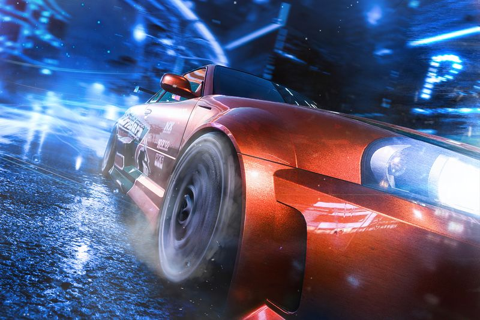
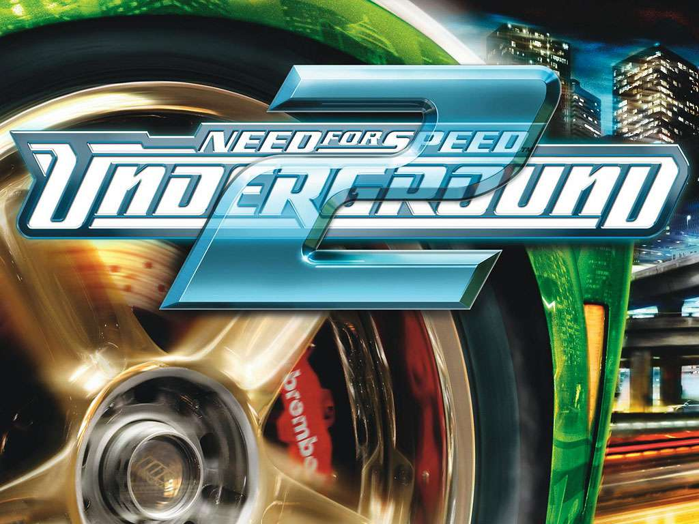

>>> Need for Speed: Most Wanted is a 2005 open-world racing video game, and the ninth installment in the Need for Speed series.
Developed by EA Canada and EA Black Box and published by Electronic Arts,
it was released on November 11, 2005, for PlayStation 2, Xbox, GameCube, Nintendo DS, Microsoft Windows, Game Boy Advance and Xbox 360.
An additional version, Need for Speed: Most Wanted 5-1-0, was released in the same year for PlayStation Portable.

Need For Speed: Underground:
>>> Need for Speed: Underground is a 2003 racing video game and the seventh installment in the Need for Speed series.
It was developed by EA Black Box and published by Electronic Arts.
Three different games were produced, one for consoles and Windows, and the other for the Game Boy Advance along with a version developed by Global VR for Arcades that was published by Konami

Need For Speed: Underground 2:
>>> Need for Speed: Underground 2 is a 2004 racing video game developed by EA Black Box and published by Electronic Arts.
It is the eighth installment in the Need for Speed series and the direct sequel to Need for Speed: Underground.
It was developed for Microsoft Windows, GameCube, PlayStation 2, and Xbox.
Game Boy Advance and Nintendo DS versions were developed by Pocketeers, and a PlayStation Portable version, titled Need for Speed: Underground Rivals, was developed by Team Fusion
Another version for mobile phones was also developed.
Like its predecessor, it was also commercially successful, selling around 11 million copies worldwide and breaking sales records in the United Kingdom.